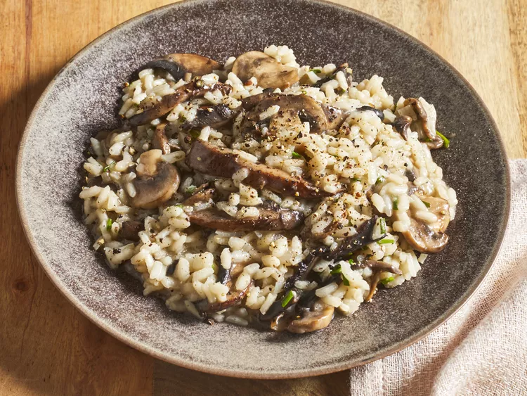

Risotto Recipe

Description:
This lemon asparagus risotto recipe is bright, flavorful, and perfect for springtime.
Ingredients:
- Vegetables
- Broth
- Oil
- Rcie
- Cheese
- wine
- Lemon
Steps:
- Steam the asparagus and cut into pieces.
- Cook the onion and celery until tender, season, and add garlic and rice.
- Cook and stir until rice is lightly toasted.
- Add the liquids gradually according to the detailed recipe below.
- Stir in the asparagus.
- Remove from heat and mix in cheese, juice, and zest.